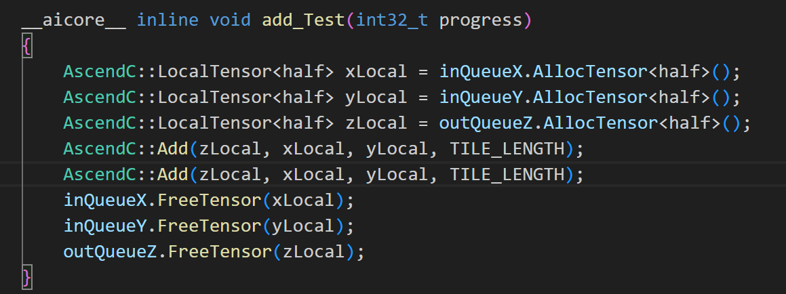
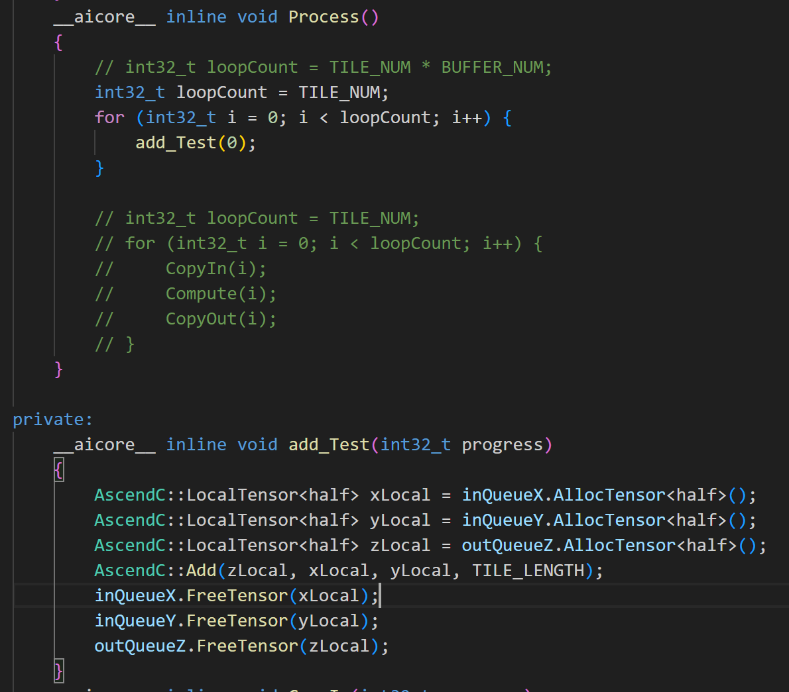
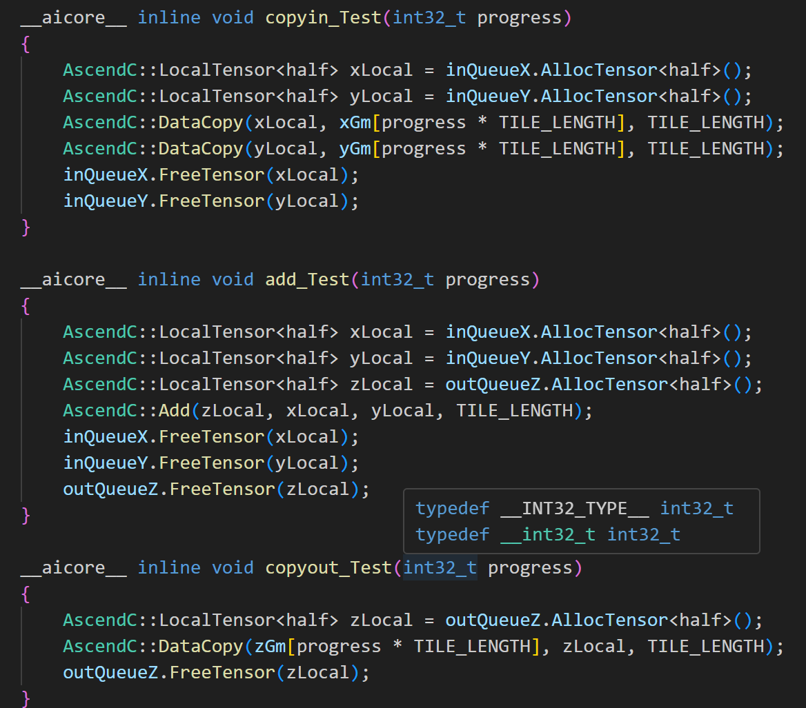
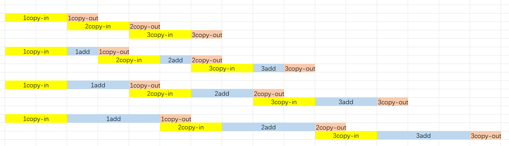
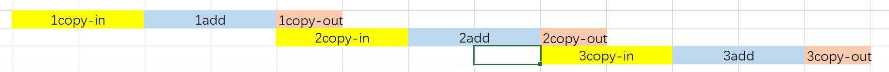
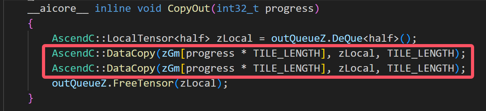
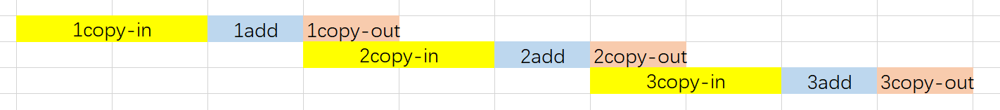
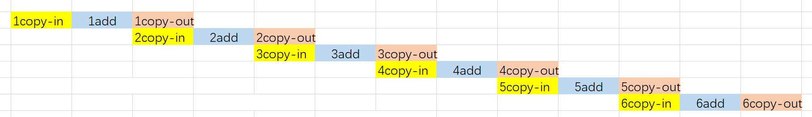
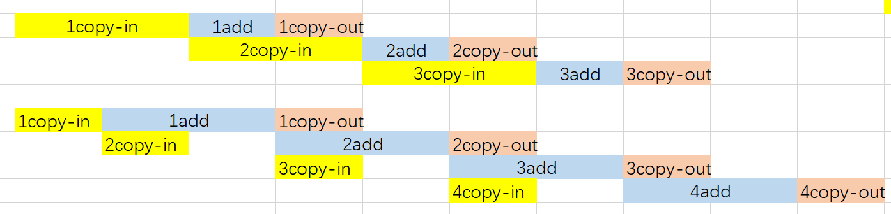
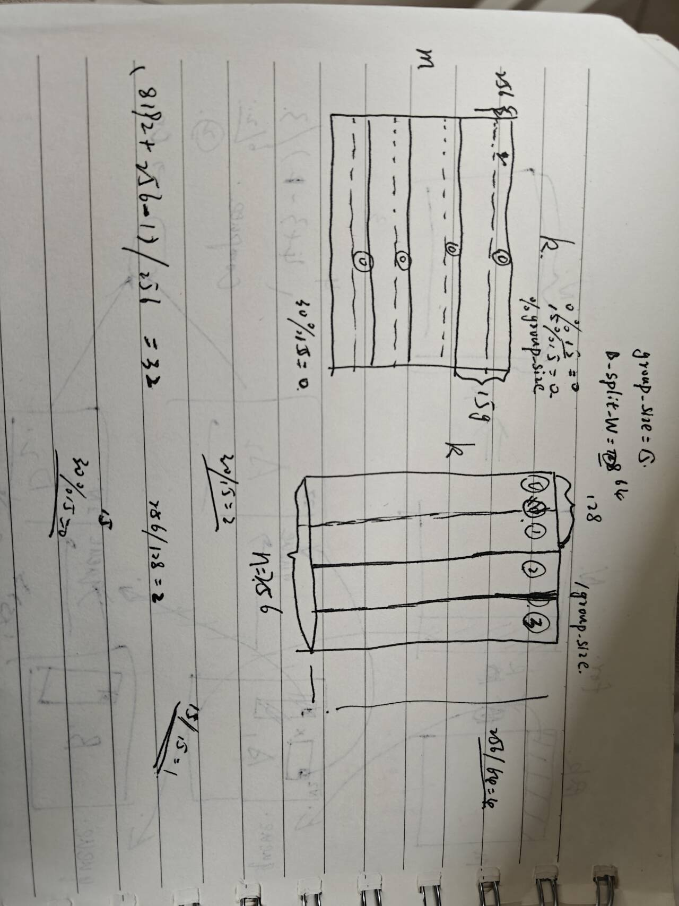

昇腾算子矩阵乘探究
编写昇腾算子完成矩阵乘
使用add_custom算子验证流水线以及多缓冲
!数据的长度限制在int32范围，因此我们采用2048*64*64*64为上限；
!同时需要注意的是，cache的容量为65536，而输入数据的大小为int16，因此，一次add支持的长度为2048*16个int16
首先验证计算段远快于搬运段，同时证明流水
我们仅仅需要在compute阶段增加一个add函数
!这个add函数仅仅执行一次add操作，不会改变任何数据，除了compute执行时间
two-add即：

| total_lenght | use_core_num | tile_num | buffer_num | tile_length | mean_time_100epoch(ms) | tip |
|---|---|---|---|---|---|---|
| 2048*64*64*64 | 1 | 64*64*8 | 1 | 2048*8 | 31.8391 | zero-add |
| 2048*64*64*64 | 1 | 64*64*8 | 1 | 2048*8 | 41.581 | one-add |
| 2048*64*64*64 | 1 | 64*64*8 | 1 | 2048*8 | 51.2499 | two-add |
| 2048*64*64*64 | 1 | 64*64*8 | 1 | 2048*8 | 60.9961 | three-add |
老实说，上面的时间相当微妙，如果按照正常逻辑，计算段的时间远低于搬运段，且满足流水，那么此处的时间应该相差不大，但是存在差距，而且不小，且每次增加的时间基本相等。
增加一个实验，仅进行相同次数的add操作，如下：

得到执行时间为9.7928ms
所以存在以下两种可能性：
非流水，整个core func是串行执行
add执行的时间接近或高于2048*8个数据的搬运
再增加三个实验，即仅进行copyin、copyout、copyin+copyout

copyin执行时间为19.158ms
copyout执行时间为9.28448ms
copyin+copyout执行时间为19.523ms
以上数据能够完美的证明搬入搬出单元是独立的,以及x，y的数据搬运是串行的，得到以下流水图示：

还有一点在于，在执行freeTensor之前，我们没办法执行新的一轮搬运，这是因为我们的buffernum为1，否则无法满足上述理论模型。
因此，对于buffernum为1的情况，约束条件为，tile>=2的copyin需要在add之后执行，add的执行必须在copyout之后。
接着实验
单核下，成倍增加数据总长度
| total_lenght | use_core_num | tile_num | buffer_num | tile_length | mean_time_100epoch(ms) |
|---|---|---|---|---|---|
| 2048*64*64*8 | 1 | 64*64*8 | 1 | 2048 | 14.9771 |
| 2048*64*64*16 | 1 | 64*64*8 | 1 | 2048*2 | 18.1726 |
| 2048*64*64*32 | 1 | 64*64*8 | 1 | 2048*4 | 25.9916 |
| 2048*64*64*64 | 1 | 64*64*8 | 1 | 2048*8 | 41.5741 |
当成倍增长总数据长度时，如果是串行，那么执行时间也应该线性增长，但是执行时间非线性，这可以侧面说明执行流程当中的流水。
对于增加数据长度，数据片数量不变而带来的时间增长，这个很好理解，虽然tile数量没变，但是tile_length在增长：

对于以上流程，其copyin以及compute决定了执行的总时间，验证copyout是否真的不影响总的执行时间，即在copyout中再执行一轮datacopy，如下：

得到的数据与上面表格对应的执行时间分别是14.9949，18.7419，27.2262，44.5016，基本不产生区别，可证。
buffer num变化
| total_lenght | use_core_num | tile_num | buffer_num | tile_length | mean_time_100epoch_2buffer(ms) | mean_time_100epoch_1buffer(ms) |
|---|---|---|---|---|---|---|
| 2048*64*64*64 | 1 | 64*64*8 | 2 | 2048*8 | 21.7073 | 41.5925 |
| 2048*64*64*64 | 1 | 64*64*16 | 2 | 2048*4 | 35.0148 | 51.8856 |
| 2048*64*64*64 | 1 | 64*64*32 | 2 | 2048*2 | 69.96 | 72.5588 |
| 2048*64*64*64 | 1 | 64*64*64 | 2 | 2048 | 139.851 | 119.389 |
随着数据片的数量增加，tile长度减小，时间损耗增大，如下图：


注意到同单缓冲数据相比，数据片长度分别为2048*8，2048*4，2048*2的样例表现更好，但是当数据片更小时,反而表现更差，
采用以下图例进行说明：

当数据片较大时，充分利用到了double buffer，即在进行add的同时也能进行copyin，add无需在copyout以后执行，因此效果较好。
但是当数据片较小时，为什么double buffer的表现效果却比单缓冲的要差？关于这一点不能够理解。
多核
| total_lenght | use_core_num | tile_num | buffer_num | tile_length | mean_time_100epoch(ms) |
|---|---|---|---|---|---|
| 2048*64*64*64 | 1 | 64*64*4 | 1 | 2048*16 | 36.8166 |
| 2048*64*64*64 | 2 | 64*64*2 | 1 | 2048*16 | 18.5086 |
| 2048*64*64*64 | 4 | 64*64*1 | 1 | 2048*16 | 9.35409 |
| 2048*64*64*64 | 8 | 64*32 | 1 | 2048*16 | 4.97731 |
| 2048*64*64*64 | 16 | 64*16 | 1 | 2048*16 | 3.17449 |
实验符合预期
matrix 验证
杂项

上面是分片，由上注意到，当B_Split_W为128，group_size为15时，根据代码，blockid=0，15，30的aicore会处理第0组数据，但是B矩阵仅被分了两组数据，因此blockid=30的aicore会轮空，也就是aicore-30实际上没有计算，其余aicore的计算负载增大，导致执行时间延长。